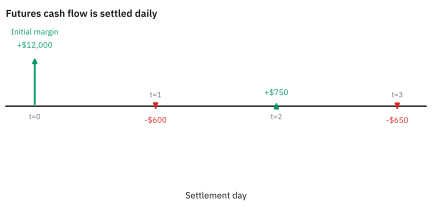
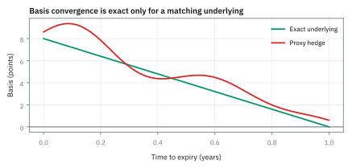

19.2 Marking-to-Market, Margin, and Basis Risk
futures ให้ผลรวมเท่ากับ forward แต่จ่ายเป็นเงินสดทุกเย็น ความต่างข้อเดียวนี้สร้างความเสี่ยงเรื่องเงินสด และ hedge ด้วยของที่ไม่ตรงกันยังเหลือ basis
คุณซื้อ ES หนึ่งสัญญาที่ 5,000 จุด จุดละ \$50 วางเงินประกันเริ่มต้น \$12,000 และบัญชีต้องไม่ต่ำกว่า \$9,000 (ตัวเลขสมมติเพื่อฝึกลงบัญชี ไม่ใช่อัตราจริงของตลาด) คืนนี้ราคาชำระออกมาที่ 4,988 เงินออกจากบัญชีเท่าไร ถ้าพรุ่งนี้ราคาชำระเป็น 4,938 ต้องโอนเงินเข้าเท่าไร เพื่อนบอกว่า “เติมแค่ \$100 ให้บัญชีกลับไปถึง \$9,000 ก็พอ” ถูกไหม?
ลองตอบก่อนเปิดเฉลย
คืนนี้เสีย $12\times\$50=\$600$ บัญชีเหลือ \$11,400 พรุ่งนี้ลงอีก 50 จุด เสีย \$2,500 เหลือ \$8,900 ต่ำกว่าเกณฑ์ \$9,000 กติกาคือต้องเติมกลับถึงเงินประกันเริ่มต้น จึงต้องโอน \$3,100 ไม่ใช่ \$100 ทั้งที่ยังไม่ได้ขายอะไรเลย futures เก็บกำไรขาดทุนเป็นเงินสดทุกเย็น ไม่รอวันหมดอายุ
สิ่งที่เราจะสร้าง
19.1 ขั้นที่ 6 หาค่าของ forward ระหว่างทาง ค่านั้นสะสมเงียบ ๆ จนถึงวันหมดอายุ futures ทำต่างออกไป: ทุกเย็นตลาดประกาศราคาชำระ แล้วโอนส่วนที่เปลี่ยนจากเมื่อวานเป็นเงินสดทันที หน้านี้ลงบัญชีกลไกนั้นทีละวัน หาว่าเมื่อไรถูกเรียกเงินและต้องเติมเท่าไร พิสูจน์ว่าเงินรายวันรวมกันได้เท่า forward แล้วดูว่าทำไมราคา futures กับ forward ยังต่างกันได้เล็กน้อย
ครึ่งหลังเป็นเรื่อง hedge ส่วนต่างระหว่างราคาของที่ถือกับราคา futures เรียกว่า basis เราแยกกำไรขาดทุนของพอร์ตที่ hedge แล้วออกเป็นส่วนที่ hedge ได้กับส่วนที่ hedge ไม่ได้ แล้วจบที่กรณีที่ hedge ถูกทิศทุกอย่าง แต่เงินสดหมดก่อน
ศัพท์ที่ใช้ในหัวข้อนี้
- Mark-to-market
- ทุกสิ้นวัน ตลาดตีราคาทุกสัญญาด้วยราคาชำระของวันนั้น แล้วโอนส่วนต่างจากเมื่อวานเป็นเงินสด คนขาดทุนจ่าย คนกำไรรับ มีไว้เพื่อไม่ให้หนี้ระหว่างคู่สัญญาสะสมจนใครหนีได้
- Settlement price
- ราคาที่ตลาดประกาศทุกวันเพื่อใช้คิดเงินรายวัน มักอิงราคาซื้อขายช่วงท้ายวัน ไม่จำเป็นต้องเท่ากับราคาที่เราซื้อขายจริง
- Initial margin
- เงินประกันที่ต้องวางตอนเปิดสัญญา เป็นกันชนรับขาดทุนรายวัน ไม่ใช่ราคาของสัญญา และไม่ใช่ขาดทุนสูงสุด
- Maintenance margin และ margin call
- ระดับขั้นต่ำของบัญชี ถ้ายอดต่ำกว่านี้หลังโอนเงินรายวัน โบรกเกอร์เรียกให้เติมเงินกลับถึง initial margin ภายในเวลาที่กำหนด ไม่เติมก็ถูกปิดสัญญา
- Clearinghouse
- ตัวกลางที่เป็นผู้ซื้อของผู้ขายทุกคน และเป็นผู้ขายของผู้ซื้อทุกคน ทำให้ไม่ต้องกังวลว่าคู่สัญญาจะหนี และเป็นผู้เก็บ margin ของทั้งตลาด
- Basis
- ราคาของที่ถือลบราคา futures ที่ใช้ hedge ถ้าของที่ถือคือของที่สัญญาอ้างอิงพอดี basis ต้องเป็นศูนย์ในวันหมดอายุ
- Basis risk
- ความเสี่ยงที่ basis ขยับระหว่างที่ hedge อยู่ ส่วนนี้ไม่หายไม่ว่าจะเลือกจำนวนสัญญาเท่าไร จึงต้องประเมินก่อนสัญญาว่า hedge จะป้องกันได้แค่ไหน
สัญลักษณ์และหน่วย
| สัญลักษณ์ | ความหมาย | หน่วย |
|---|---|---|
| $N$ | จำนวนสัญญา ติดลบคือขาย | สัญญา |
| $M$ | ตัวคูณสัญญา ES | \$ ต่อจุด |
| $F_t$ | ราคาชำระของ futures วันที่ $t$ | จุด |
| $\Delta\Pi_t$ | เงินที่โอนเข้าหรือออกในวันที่ $t$ | \$ |
| $V_t,\ V_{\text{init}},\ V_{\text{mnt}}$ | ยอดบัญชี margin หลังโอน, initial margin, maintenance margin | \$ |
| $C_t$ | เงินที่ถูกเรียกให้เติมในวันที่ $t$ | \$ |
| $G_0$ | ราคา forward ของ 19.1 | จุด |
| $u,\ d,\ R,\ q$ | ตัวคูณขาขึ้น ขาลง ตัวคูณเงินฝากต่องวด และน้ำหนักตั้งราคาของ 18.3 | ไม่มีหน่วย |
| $S_t,\ B_t$ | ราคาของที่ถือ และ basis $S_t-F_t$ | จุด |
| $Q$ | ขนาดของที่ถือ คิดเป็นเงินต่อการขยับหนึ่งจุดของดัชนี | \$ ต่อจุด |
ขั้นที่ 1 — ลองด้วยมือ: สามวันของบัญชี margin
โจทย์ให้อะไรมาบ้าง: ซื้อ ES หนึ่งสัญญาที่ 5,000 บัญชีเริ่มที่ \$12,000 ราคาชำระสามวันถัดมาคือ 4,988, 5,003 และ 4,990 ทุกเย็นเทียบราคาชำระวันนี้กับของเมื่อวาน แล้วโอนส่วนต่างคูณ \$50
ราคาที่เราซื้อ 5,000 ถูกใช้แค่ในวันแรก หลังจากนั้นทุกวันเทียบกับราคาชำระของเมื่อวาน เพราะส่วนที่เปลี่ยนก่อนหน้านั้นถูกจ่ายไปแล้ว เงินจึงย้ายทีละก้อนเล็ก ๆ ทุกเย็น บัญชีต่ำสุดที่ \$11,400 ยังเหนือเกณฑ์ \$9,000 จึงไม่มีใครเรียกเงินเพิ่ม
คำตอบ: สามวันขาดทุนรวม \$500 แต่จ่ายเป็นสามก้อน −\$600, +\$750, −\$650 บัญชีจบที่ \$11,500
ตรวจเองใน 10 วินาที: ราคาจบที่ 4,990 ต่ำกว่าราคาซื้อ 10 จุด $10\times50=500$ และ $12{,}000-500=11{,}500$ ตรงกับบรรทัดสุดท้าย
Figure 19.2a — ยอดบัญชี margin สามวัน

ยอดบัญชี margin ของขั้นที่ 1 วันที่ 0 ถึง 3 คือ \$12,000, \$11,400, \$12,150 และ \$11,500 เส้นประแดงคือเกณฑ์ \$9,000 ยอดต่ำสุด \$11,400 ยังห่างเกณฑ์ \$2,400 หรือ 48 จุดของ ES จึงยังไม่มีการเรียกเงิน
Figure 19.2b — เงินของ futures ย้ายทุกวัน

ลูกศรเงินของขั้นที่ 1 แกนนอนเป็นวันชำระ 0 ถึง 3 ลูกศรแรกคือเงินประกัน \$12,000 รูปวาดเป็นลูกศรเขียวชี้ขึ้นเพราะมองจากฝั่งบัญชี margin ที่ได้รับเงิน จากกระเป๋าของเรามันคือเงินออก ลูกศรรายวัน −600, +750, −650 ถูกย่อตามขนาดเทียบกับ 12,000 จึงสั้นมาก สิ่งที่รูปบอกคือเงินย้ายทุกวัน ต่างจาก forward ของ 19.1 ที่มีเงินก้อนเดียวตอนจบ
ขั้นที่ 2 — กติกาเป็นสมการ และราคาที่ทำให้ถูกเรียกเงิน
ตารางของขั้นที่ 1 เดินตามกติกาสามข้อ เขียนเป็นสมการแล้วเราตอบคำถามที่โต๊ะอยากรู้ได้ทันที โดยไม่ต้องไล่ทีละวัน: ราคาลงได้อีกเท่าไรก่อนถูกเรียกเงิน และถูกเรียกแล้วต้องเติมเท่าไร สามบรรทัดแรกเป็นนิยามตามกติกาของตลาด บรรทัดที่เหลือใส่ตัวเลขของโจทย์เปิดเรื่อง
บรรทัดที่สามคือจุดที่เพื่อนพลาด เมื่อยอดต่ำกว่าเกณฑ์ ต้องเติมกลับถึงเงินประกันเริ่มต้น ไม่ใช่แค่ถึงเกณฑ์ ตลาดทำแบบนี้เพื่อให้กันชนกลับมาเต็ม ถ้าเติมแค่ถึง \$9,000 ราคาขยับลงอีกนิดเดียวก็ถูกเรียกอีก
บรรทัดสุดท้ายถามว่าราคาต่ำแค่ไหนจึงเริ่มถูกเรียก ก่อนมีการเติมเงิน ยอดบัญชีคือ $12{,}000+50(F-5{,}000)$ ซึ่งต่ำกว่า 9,000 เมื่อ $F$ ต่ำกว่า 4,940 คือห่างจุดซื้อแค่ 60 จุด หรือ 1.2% สัญญาหนึ่งคุมดัชนีมูลค่า $5{,}000\times50=\$250{,}000$ ด้วยเงินประกัน \$12,000 คือ 20.8 เท่า ดัชนีขยับ 1.2% ก็กินกันชนหมด
ขั้นที่ 3 — เงินรายวันรวมกันได้เท่ากับ forward
futures จ่ายเป็นก้อนเล็ก ๆ ทุกวัน ส่วน forward จ่ายก้อนเดียวตอนจบ คำถามที่ต้องตอบก่อนเอา futures ไปใช้แทน forward คือยอดรวมต่างกันไหม บวกเงินรายวันทุกวันเข้าด้วยกันแล้วดู
ในวงเล็บ $F_1$ ถูกบวกแล้วลบ $F_2$ ก็เช่นกัน ทุกตัวกลางหักล้างกันเป็นคู่ เหลือแค่ตัวสุดท้ายลบตัวแรก ในวันหมดอายุราคา futures ต้องเท่ากับดัชนี ไม่อย่างนั้นก่อนหมดเวลาไม่กี่วินาทีใครก็ซื้อตัวถูกขายตัวแพงแล้วเก็บส่วนต่างได้ ยอดรวมจึงเท่ากับ $S_n-F_0$ ของ forward พอดี
ข้อแม้คือยังไม่นับดอกเบี้ย เงิน \$600 ของวันแรกออกจากกระเป๋าตั้งแต่วันแรก ไม่ใช่ตอนจบ ความต่างระหว่าง futures กับ forward จึงเหลือเรื่องเดียวคือเวลาของเงิน ซึ่งขั้นที่ 4 และ 5 ดูต่อ
ขั้นที่ 4 — ราคา futures บนต้นไม้: ทำไมเท่ากับ forward เมื่อดอกเบี้ยคงที่
futures เข้าได้ฟรีทุกเวลา และจ่าย $F_{t+1}-F_t$ ในงวดถัดไป ของที่เข้าได้ฟรีต้องมีค่าศูนย์ ใช้ต้นไม้ของ 18.3 ตั้งเงื่อนไขนี้แล้วแก้หาราคา ตัวอย่าง: หุ้น \$100 งวดหน้าขึ้นเป็น 110 หรือลงเป็น 90 ($u=1.1$, $d=0.9$) เงินฝากโตงวดละ 2% ($R=1.02$) ไม่มีปันผล
บรรทัดแรกคือค่าวันนี้ของ futures: เงินที่จ่ายงวดหน้าเฉลี่ยด้วยน้ำหนัก $q$ แล้วคิดลดด้วย $R$ ต้องได้ศูนย์ จังหวะที่น่าสนใจคือ $R$ หายไปเลย เพราะศูนย์หารด้วยอะไรก็เป็นศูนย์ ราคา futures จึงเป็นค่าเฉลี่ยธรรมดาของราคางวดหน้า ไม่มีการคิดลด
ต้นไม้หนึ่งงวด งวดหน้าคือวันหมดอายุ $F_1=S_1$ ได้ 102 เท่ากับ forward $100(1.02)$ ของ 19.1 ต้นไม้สองงวด ทำย้อนจากปลายทาง 121, 99 และ 81 ได้ 112.2 กับ 91.8 ซึ่งคือ $110(1.02)$ กับ $90(1.02)$ แล้วย้อนอีกครั้งได้ 104.04 เท่ากับ forward สองงวดพอดี เมื่อดอกเบี้ยคงที่ futures กับ forward ราคาเดียวกันทุกจุดของต้นไม้
ขั้นที่ 5 — เมื่อดอกเบี้ยขยับไปพร้อมราคา futures ไม่เท่ากับ forward
โจทย์ให้อะไรมาบ้าง: สมมติถือ futures ฝั่งซื้อหนึ่งหน่วย วันแรกราคาขึ้นหรือลง 10 จุด ด้วยน้ำหนักเท่ากัน ถ้าราคาขึ้น ดอกเบี้ยขึ้นเป็น 6% ต่อปี ถ้าราคาลง ดอกเบี้ยลงเป็น 2% ต่อปี เหลือเวลาอีก 1 ปีถึงวันหมดอายุ และหลังจากนั้นราคาไม่ขยับอีก เทียบกับ forward ที่ได้ ±10 จุดก้อนเดียวในวันหมดอายุ
ขา futures ได้ +10 เป็นเงินสดตั้งแต่วันแรก แล้วเอาไปฝากที่ 6% ครบปีเป็น 10.6184 ส่วนกรณีที่เสีย 10 ต้องกู้มาจ่าย แต่กู้ได้ถูกที่ 2% ครบปีเป็นหนี้ 10.2020 เฉลี่ยสองกรณีได้เปรียบ 0.2082 จุด ส่วน forward ได้ +10 หรือ −10 ตอนจบ เฉลี่ยเป็นศูนย์
ทั้งสองสัญญาเข้าได้ฟรี ถ้าขาซื้อ futures ได้เปรียบแบบนี้ ตลาดต้องตั้งราคา futures ให้สูงกว่า forward เล็กน้อยเพื่อลบความได้เปรียบนั้น ถ้าดอกเบี้ยขยับสวนทางกับราคา ทุกอย่างกลับด้าน กับ ES อายุไม่กี่เดือนส่วนนี้เล็กมาก แต่กับ futures ของอัตราดอกเบี้ยอายุยาวในบทที่ 20 มันใหญ่พอที่โต๊ะต้องปรับ
คำตอบ: ในตัวอย่างนี้ขาซื้อ futures ได้เปรียบ forward เฉลี่ย 0.21 จุด ราคา futures จึงต้องสูงกว่าราคา forward เล็กน้อย
ตรวจเองใน 10 วินาที: ดอกเบี้ยของสองกรณีต่างกัน $6\%-2\%=4\%$ ต่อปีบนเงิน 10 จุด คือ 0.4 จุด แต่ละกรณีมีน้ำหนักครึ่งหนึ่ง จึงได้ราว 0.2
ขั้นที่ 6 — basis ของดัชนีเดียวกันหดเป็นศูนย์ แต่ของที่ใช้แทนไม่ต้องหด
คนที่ hedge ถือของจริงอยู่แล้วและขาย futures ไว้ ความต่างระหว่างสองราคานี้คือสิ่งที่ hedge ไม่ได้ จึงต้องรู้ก่อนว่ามันเดินอย่างไร บรรทัดแรกเป็นนิยาม บรรทัดที่สองใช้ fair value ของ 19.1 กับ ES เทียบดัชนีของมันเอง (ไม่มีปันผล ดอกเบี้ย 5%) แล้วดูเมื่อเวลาเหลือ 0.5, 0.25 และ 0 ปี โดยให้ดัชนีอยู่ที่ 5,000
basis ติดลบเพราะ futures แพงกว่าดัชนีเท่าดอกเบี้ยที่เหลือต้องจ่าย และหดเข้าหาศูนย์ตามเวลาแบบที่รู้ล่วงหน้า ส่วนนี้จึงไม่ใช่ความเสี่ยง มันคือดอกเบี้ยที่คนขาย futures ได้รับทีละน้อย
ความเสี่ยงจริงมาจากสองแหล่ง: ราคา futures เบี่ยงจาก fair value ในระยะสั้น และของที่ถือไม่ใช่ดัชนี เช่นกองทุนหุ้นเทคโนโลยีที่ hedge ด้วย ES basis ของกรณีหลังไม่มีอะไรบังคับให้เป็นศูนย์ในวันหมดอายุ
Figure 19.2c — basis ของของจริงกับของที่ใช้แทน

เส้นเขียว (Exact underlying) คือ basis $8(1-t)$ จุด ลดเป็นเส้นตรงจาก 8 ถึง 0 เส้นแดง (Proxy hedge) บวกคลื่น $1.8\sin(4\pi t)(1-t)$ และค่าคงที่ 0.6 จึงจบที่ 0.6 ไม่แตะศูนย์ ตัวเลขเป็นภาพกลไก ไม่ใช่ข้อมูลของ ES ข้อบกพร่องของรูป: ป้ายแกนนอนเขียนว่า time to expiry แต่เส้นเขียวแตะศูนย์ที่ค่า 1 แกนนอนจึงเป็นเวลาที่ผ่านไปเป็นสัดส่วนของอายุสัญญา ไม่ใช่เวลาที่เหลือ และรูปใช้ basis เป็นบวก 8 จุดเพื่อให้เห็นรูปร่าง ขณะที่ basis ของขั้นที่ 6 เป็นลบ
ขั้นที่ 7 — แยกกำไรขาดทุนหลัง hedge: ส่วนที่ขนาดแก้ได้ กับส่วนที่แก้ไม่ได้
ถือกองทุน \$250,000 ที่เดินตามดัชนีโดยประมาณ ขยับ $250{,}000/5{,}000=\$50$ ต่อจุดของดัชนี จึงให้ $Q=50$ แล้วขาย ES หนึ่งสัญญา ($N=-1$) วันหนึ่ง futures ลง 40 จุด แต่กองทุนลงเท่ากับ 42 จุดของดัชนี เพื่อดูว่า hedge เอาอะไรออกไปได้ เขียนกำไรขาดทุนรวม แล้วแทน $\Delta S=\Delta B+\Delta F$ ซึ่งเป็นแค่นิยามของ basis ที่ย้ายข้าง
การจัดกลุ่มใหม่ในบรรทัดที่สามคือหัวใจของขั้นนี้ ก้อนที่สองคูณการขยับของ futures ด้วย $Q+NM$ ถ้าเลือกจำนวนสัญญาให้ $NM=-Q$ ก้อนนี้หายหมด นั่นคืองานของ 19.3 ก้อนแรก $Q\,\Delta B$ ไม่มี $N$ อยู่เลย เลือกจำนวนสัญญาเท่าไรก็ไม่หาย นี่คือ basis risk
ในตัวอย่าง ขนาดพอดีแล้ว ($50-50=0$) ถ้าไม่ hedge กองทุนเสีย \$2,100 เมื่อ hedge แล้วเหลือเสีย \$100 ซึ่งคือ basis 2 จุดคูณ \$50
Figure 19.2d — กำไรขาดทุนที่เหลือหลัง hedge ขึ้นกับ basis

แกนนอนคือการเปลี่ยนของ basis −20 ถึง +20 จุด แกนตั้งคือกำไรขาดทุนที่เหลือหลัง hedge ต่อสัญญา $50\,\Delta B$ จาก −\$1,000 ถึง +\$1,000 ขนาด hedge ที่พอดีลบก้อนที่สองของขั้นที่ 7 ได้หมด แต่ขยับเส้นนี้ไม่ได้เลย จุด −2 บนแกนนอนคือ −\$100 ของขั้นที่ 7
ขั้นที่ 8 — hedge ถูกทิศ แต่เงินสดหมดก่อน
โจทย์ให้อะไรมาบ้าง: ถือหุ้น \$250,000 ที่เดินตามดัชนี และขาย ES หนึ่งสัญญาที่ 5,000 ไว้ hedge บัญชี margin เริ่ม \$12,000 เกณฑ์ \$9,000 ดัชนีขึ้นวันละ 25 จุดติดกัน 20 วันจนถึง 5,500 หุ้นได้กำไร แต่ขา ES เสียเงินสดทุกวัน
ทุกสามวันบัญชีลด \$3,750 จนต่ำกว่าเกณฑ์ ถูกเรียกให้เติมกลับถึง \$12,000 วันที่ 3, 6, 9, 12, 15 และ 18 รวมหกครั้ง วันที่ 19 กับ 20 ลดอีกสองวันเหลือ \$9,500 เงินที่ออกจากกระเป๋าทั้งหมดคือเงินประกันบวกเงินที่เติม ลบยอดที่เหลือ ได้ \$25,000 เท่ากับ $500\times50$ ซึ่งคือขาดทุนของ ES และเท่ากับกำไรของหุ้นพอดี
ปัญหาคือกำไรของหุ้นเป็นแค่ตัวเลขบนกระดาษ ส่วนเงินที่ต้องเติมต้องเป็นเงินสดภายในวัน ถ้าหาไม่ทัน โบรกเกอร์ปิด ES ให้ hedge หายไปตรงยอดของการวิ่งขึ้น และความเสี่ยงที่ตั้งใจปิดก็กลับมาทั้งก้อน
คำตอบ: ต้องหาเงินสดเพิ่ม \$22,500 ใน 20 วัน ทั้งที่พอร์ตรวมไม่ได้ขาดทุนเลย
ตรวจเองใน 10 วินาที: ขาดทุนของ ES $500\times50=25{,}000$ ส่วนที่บัญชีรับไว้เองโดยไม่ต้องเติมคือ $12{,}000-9{,}500=2{,}500$ ที่เหลือ $25{,}000-2{,}500=22{,}500$ ต้องเติมจากข้างนอก
คำถามที่ควรถามออกมาดัง ๆ
ถ้า futures ต้องจ่ายเงินทุกวันแต่ forward ไม่ต้อง ทำไมคนยังใช้ futures? เพราะ clearinghouse ยืนอยู่ตรงกลาง ไม่มีใครต้องกังวลว่าคู่สัญญาจะหนี และสัญญามาตรฐานซื้อขายได้ทันทีในตลาดที่คนเยอะ ราคาที่จ่ายคือต้องบริหารเงินสดทุกวันแบบขั้นที่ 8
ทำไมต้องเติมกลับถึง initial ไม่ใช่แค่ถึง maintenance? เพื่อให้กันชนกลับมาเต็ม ถ้าเติมแค่ถึง \$9,000 ราคาลงอีกจุดเดียวก็ต่ำกว่าเกณฑ์อีก และ clearinghouse ต้องไล่เรียกเงินทุกวัน
ราคาชำระของ futures ไม่ใช่ดัชนี แล้วบัญชีคิดจากอะไร? คิดจากราคาชำระของ futures ทุกวัน มีแค่วันหมดอายุเท่านั้นที่ราคาชำระถูกกำหนดให้เท่ากับระดับดัชนี
ความผิดที่ให้คำตอบผิดแบบเงียบ ๆ
เติมเงินแค่ถึงเกณฑ์: ในโจทย์เปิดเรื่องต้องโอน \$3,100 ไม่ใช่ \$100 ถ้าเตรียมเงินไว้แค่ส่วนที่ขาดจากเกณฑ์ สัญญาถูกปิดตั้งแต่วันแรกที่ถูกเรียก
คิดว่า margin คือขาดทุนสูงสุด: ดัชนีลง 5% คือ 250 จุด เสีย $250\times50=\$12{,}500$ มากกว่าเงินประกันทั้งก้อน \$12,000 margin เป็นแค่กันชนของหนึ่งถึงสองวัน
เทียบกับราคาที่ซื้อทุกวัน: ถ้าคิดเงินรายวันเทียบ 5,000 ทุกวันในขั้นที่ 1 จะได้ −600, +150, −500 รวม −950 ซึ่งผิด เพราะนับการขยับของวันก่อนซ้ำ ของจริงคือ −500
นับกำไรบนกระดาษเป็นเงินสด: ขั้นที่ 8 ต้องหาเงินสด \$22,500 ทั้งที่กำไรของหุ้นเท่ากับขาดทุนของ ES พอดี
hedge ด้วยของที่ใช้แทนแล้วคาดว่า basis จะหายเอง: ใน Figure 19.2c เส้นของที่ใช้แทนจบที่ 0.6 จุด ไม่ใช่ศูนย์ ส่วนนั้นเป็นกำไรหรือขาดทุนของเราเอง
ใช้ทำอะไรบนโต๊ะจริง
โต๊ะที่ใช้ futures hedge มีคนดูแลเงินสดโดยเฉพาะ ทุกเช้าคำนวณว่าถ้าราคาขยับแรงเท่าวันที่แย่ที่สุดในอดีต จะถูกเรียกเงินเท่าไร แล้วกันเงินสดหรือวงเงินกู้ไว้ก่อน กองทุนที่ถือหุ้นแต่ hedge ด้วย futures จึงถือเงินสดส่วนหนึ่งไว้เสมอเพื่อจ่ายเงินรายวัน
ก่อนเปิด hedge ด้วยของที่ไม่ตรงกับดัชนี โต๊ะวัดว่า basis ในอดีตขยับได้แค่ไหน แล้วบอกเจ้าของเงินล่วงหน้าว่า hedge นี้จะเหลือความเสี่ยงประมาณเท่าไร ไม่ใช่สัญญาว่าจะเป็นศูนย์
สามโจทย์ตรวจความเข้าใจ
1. ขาย ES สองสัญญาที่ 5,000 เงินประกันเริ่ม \$24,000 เกณฑ์ \$18,000 ราคาชำระสองวันถัดมาคือ 5,030 และ 5,070 แต่ละวันเงินออกเท่าไร ถูกเรียกเงินไหม และราคาเท่าไรที่เริ่มถูกเรียก?
เฉลย
ฝั่งขายเสียเมื่อราคาขึ้น วันแรก $-2(50)(30)=-\$3{,}000$ บัญชีเหลือ \$21,000 วันที่สอง $-2(50)(40)=-\$4{,}000$ เหลือ \$17,000 ต่ำกว่า \$18,000 ต้องเติม $24{,}000-17{,}000=\$7{,}000$ กันชนคือ $24{,}000-18{,}000=6{,}000$ หารด้วย $2\times50=100$ ได้ 60 จุด จึงเริ่มถูกเรียกเมื่อราคาชำระสูงกว่า 5,060
2. ซื้อ ES สามสัญญา ราคาชำระเป็น 5,000 → 5,020 → 4,970 → 5,010 → 5,045 เงินรายวันเป็นเท่าไร และรวมได้เท่าไร ตรวจด้วยการหักล้างของขั้นที่ 3
เฉลย
$150\times20=+3{,}000$, $150\times(-50)=-7{,}500$, $150\times40=+6{,}000$, $150\times35=+5{,}250$ โดย $150=3\times50$ รวม \$6,750 ตรงกับ $150(5{,}045-5{,}000)=150\times45=6{,}750$ แต่ระหว่างทางวันที่สองต้องจ่าย \$7,500 ทั้งที่จบด้วยกำไร
3. ถือกองทุน \$500,000 ที่ขยับ \$100 ต่อจุดของดัชนี ขาย ES สองสัญญา วันหนึ่ง futures ลง 30 จุด กองทุนลงเท่ากับ 33 จุด กำไรขาดทุนก่อนและหลัง hedge เป็นเท่าไร?
เฉลย
ก่อน hedge $100(-33)=-\$3{,}300$ หลัง hedge $-3{,}300+(-2)(50)(-30)=-3{,}300+3{,}000=-\$300$ ขนาดพอดีเพราะ $Q+NM=100-100=0$ ที่เหลือคือ $Q\,\Delta B=100(-3)=-\$300$ จาก basis ที่ขยับ 3 จุด
คำนวณซ้ำด้วย JavaScript
โค้ดนี้ลงบัญชี margin ทีละวันพร้อมการเรียกเงิน หาราคา futures บนต้นไม้หนึ่งและสองงวด คิดความได้เปรียบเมื่อดอกเบี้ยขยับตามราคา basis ของ ES ตามเวลาที่เหลือ และแยกกำไรขาดทุนหลัง hedge แล้วพิมพ์ตัวเลขหลักออกมาหนึ่งบรรทัด
const {exp} = Math;
function finite(name, x) {
if (typeof x !== 'number' || !Number.isFinite(x)) throw new TypeError(`${name} must be a finite number`);
return x;
}
function positive(name, x) {
if (finite(name, x) <= 0) throw new RangeError(`${name} must be positive`);
return x;
}
// Daily settlement of N contracts (N < 0 = short). Below maintenance the account is topped up to initial.
function settle({prices, N, M, initial, maintenance}) {
if (!Array.isArray(prices) || prices.length < 2) throw new RangeError('prices needs at least two settlements');
prices.forEach(p => positive('price', p)); finite('N', N); positive('M', M);
if (!(positive('initial', initial) > positive('maintenance', maintenance))) throw new RangeError('initial must exceed maintenance');
let balance = initial, calls = 0, paidIn = 0;
const days = [];
for (let t = 1; t < prices.length; t++) {
const pnl = N * M * (prices[t] - prices[t - 1]);
balance += pnl;
let call = 0;
if (balance < maintenance) { call = initial - balance; balance = initial; calls++; paidIn += call; }
days.push({pnl, call, balance});
}
return {days, calls, paidIn, total: N * M * (prices[prices.length - 1] - prices[0])};
}
// Futures price in an n-step tree: F_n = S_n, then F_t = q F_up + (1 - q) F_down (no discounting).
function futuresTree({S0, u, d, R, n}) {
positive('S0', S0); positive('R', R);
if (!(d < R && R < u)) throw new RangeError('need d < R < u');
if (!Number.isInteger(n) || n < 1) throw new RangeError('n must be a positive integer');
const q = (R - d) / (u - d);
let F = [];
for (let j = 0; j <= n; j++) F.push(S0 * u ** j * d ** (n - j));
const levels = [F];
for (let t = n - 1; t >= 0; t--) {
F = F.slice(1).map((up, j) => q * up + (1 - q) * F[j]);
levels.unshift(F);
}
return {q, F0: F[0], forward: S0 * R ** n, level1: levels[1]};
}
// Hedged P&L of Q dollars per point of the asset against N contracts: basis part + size-mismatch part.
function hedgedPnL({Q, N, M, dS, dF}) {
[Q, N, M, dS, dF].forEach((x, i) => finite(['Q', 'N', 'M', 'dS', 'dF'][i], x));
const dB = dS - dF;
return {unhedged: Q * dS, hedged: Q * dS + N * M * dF, basisPart: Q * dB, sizePart: (Q + N * M) * dF};
}
const three = settle({prices: [5000, 4988, 5003, 4990], N: 1, M: 50, initial: 12000, maintenance: 9000});
const drop = settle({prices: [5000, 4988, 4938], N: 1, M: 50, initial: 12000, maintenance: 9000});
const rally = settle({prices: Array.from({length: 21}, (_, k) => 5000 + 25 * k), N: -1, M: 50, initial: 12000, maintenance: 9000});
const one = futuresTree({S0: 100, u: 1.1, d: 0.9, R: 1.02, n: 1});
const two = futuresTree({S0: 100, u: 1.1, d: 0.9, R: 1.02, n: 2});
console.log(JSON.stringify({
three, drop, rally: {calls: rally.calls, paidIn: rally.paidIn, last: rally.days[19].balance, total: rally.total},
roomPoints: (12000 - 9000) / 50, notionalOverMargin: 5000 * 50 / 12000,
one: {q: one.q, F0: one.F0, forward: one.forward}, two: {F0: two.F0, forward: two.forward, level1: two.level1},
rateTilt: (10 * exp(0.06) - 10 * exp(0.02)) / 2,
basis: [0.5, 0.25, 0].map(tau => 5000 - 5000 * exp(0.05 * tau)),
hedge: hedgedPnL({Q: 50, N: -1, M: 50, dS: -42, dF: -40})
}));ที่มาที่ไป
ตลาดธัญพืชของชิคาโกในกลางศตวรรษที่ 19 เจอปัญหาคู่สัญญาเบี้ยว: ราคาลงแรงคนซื้อหาย ราคาขึ้นแรงคนขายเอาของไปขายที่อื่น ปี 1865 Chicago Board of Trade เริ่มใช้สัญญามาตรฐานและบังคับวางเงินประกัน และในปี 1925 ตั้งสำนักหักบัญชีกลางที่เป็นคู่สัญญาให้ทุกคน การโอนกำไรขาดทุนทุกวันจึงกลายเป็นกติกาพื้นฐานของ futures
ระบบนี้แทบกำจัดความเสี่ยงที่คู่สัญญาจะหนี แต่ย้ายความเสี่ยงไปเป็นเรื่องเงินสด ตัวอย่างที่ถูกยกบ่อยคือ Metallgesellschaft ของเยอรมนีในปี 1993 ที่ hedge สัญญาขายน้ำมันระยะยาวด้วย futures ระยะสั้น พอราคาน้ำมันลง ขา futures ถูกเรียกเงินทันทีขณะที่กำไรของสัญญาขายยังไม่เป็นเงินสด สุดท้ายต้องปิดสถานะและบันทึกขาดทุนราว \$1.3 พันล้าน
ข้อจำกัด: วิธีนี้สมมติอะไร และของจริงเป็นอย่างไร
| สมมติอะไร | ของจริง | ผลเวลาใช้งาน |
|---|---|---|
| margin คงที่ \$12,000 และ \$9,000 | clearinghouse ขึ้น margin ในช่วงที่ตลาดผันผวน | ต้องใช้เงินสดเพิ่มในจังหวะที่หาเงินยากที่สุด |
| โอนเงินวันละครั้งตอนเย็น | วันที่ราคาขยับแรง อาจถูกเรียกเงินระหว่างวัน | ต้องมีเงินพร้อมภายในไม่กี่ชั่วโมง |
| ดอกเบี้ยคงที่ futures จึงเท่ากับ forward | ดอกเบี้ยขยับและอาจขยับตามราคา | ราคาสองแบบต่างกันเล็กน้อย ใหญ่ขึ้นกับสัญญาอายุยาว |
| ของที่ hedge คือดัชนีเดียวกับสัญญา | มักเป็นกองทุนหรือหุ้นกลุ่มที่ใกล้เคียง | basis ไม่ต้องเป็นศูนย์ในวันหมดอายุ เหลือความเสี่ยงของเราเอง |
สิ่งที่ควรตอบได้หลังอ่าน
- futures โอน $NM(F_t-F_{t-1})$ เป็นเงินสดทุกเย็น เทียบกับราคาชำระของเมื่อวาน ไม่ใช่ราคาที่ซื้อ
- บัญชีต่ำกว่าเกณฑ์ต้องเติมกลับถึง initial margin: ในโจทย์เปิดเรื่องคือ \$3,100 ไม่ใช่ \$100 และ ES ขยับแค่ 60 จุด (1.2%) ก็ถูกเรียก
- เงินรายวันรวมกันได้ $NM(S_T-F_0)$ เท่า forward เพราะพจน์กลางหักล้างกันและ $F_T=S_T$ ต่างกันแค่เวลาของเงิน
- ดอกเบี้ยคงที่ทำให้ราคา futures เท่ากับ forward (102 และ 104.04 บนต้นไม้) ถ้าดอกเบี้ยขยับตามราคา futures แพงกว่าเล็กน้อย
- หลัง hedge เหลือ $Q\,\Delta B+(Q+NM)\,\Delta F$ ขนาดสัญญาแก้ได้แค่ก้อนหลัง ก้อน basis ยังอยู่ และ hedge ที่ถูกทิศก็ยังต้องใช้เงินสด (\$22,500 ในขั้นที่ 8)
19.3 ใช้สูตรของขั้นที่ 7 กับพอร์ตหุ้นจริงที่ไม่ได้เดินเท่าดัชนี: ต้องขาย ES กี่สัญญาเมื่อพอร์ตมี beta ไม่เท่ากับหนึ่ง และความเสี่ยงที่เหลือใหญ่แค่ไหน